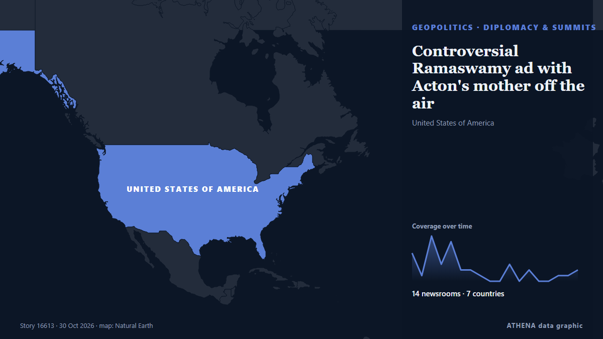

Controversial Ramaswamy ad with Acton's mother off the air

Ohio gubernatorial nominee Vivek Ramaswamy’s (R) campaign is no longer airing a controversial ad featuring his opponent’s mother after it ran its course on the air. de The Hill
Relayé de façon indépendante par 14 médias dans 7 pays depuis le 21 oct. ; premier à l'annoncer : The Independent ; la couverture faiblit. ATHENA juge le risque faible (1.6/10), surtout en raison de la gravité des dommages décrits et de la qualité des preuves. La confiance est de 90 % (élevée) : 14 médias indépendants le confirment, avec une fiabilité moyenne des sources de 74 %. Qui l'a rapporté : 19 médias en États-Unis · United States, 10 médias en Royaume-Uni · United Kingdom, 3 médias en Inde · India. La couverture s'est étendue de 21 oct. à 30 oct., sur 208 heures.
Pourquoi c'est important: Les évolutions de sécurité et de diplomatie peuvent déplacer alliances, échanges et marchés bien au-delà des pays directement concernés.
Ce qui a changé : 4 nouveaux articles de 4 rédactions dans les 24 heures jusqu'au 30 oct..
Premier titre : Vivek Ramaswamy stands by ad featuring Amy Acton's mother despite bipartisan criticism in Ohio
Les titres sont affichés en anglais, tels que publiés.
En un coup d'œil
Sélectionné, noté et rédigé par la méthodologie publiée d'ATHENA. Aucun rédacteur n'intervient sur un événement en particulier. Comment il est produit ›
| 21 Oct 09:34 UTC | 5 |
|---|---|
| 21 Oct 21:34 UTC | 1 |
| 22 Oct 09:34 UTC | 8 |
| 22 Oct 21:34 UTC | 3 |
| 23 Oct 09:34 UTC | 7 |
| 23 Oct 21:34 UTC | 2 |
| 24 Oct 09:34 UTC | 2 |
| 24 Oct 21:34 UTC | 1 |
| 25 Oct 09:34 UTC | 0 |
| 25 Oct 21:34 UTC | 0 |
| 26 Oct 09:34 UTC | 3 |
| 26 Oct 21:34 UTC | 0 |
| 27 Oct 09:34 UTC | 2 |
| 27 Oct 21:34 UTC | 0 |
| 28 Oct 09:34 UTC | 0 |
| 28 Oct 21:34 UTC | 1 |
| 29 Oct 09:34 UTC | 1 |
| 29 Oct 21:34 UTC | 2 |
| 22 Oct 07:05 UTC | 0.0 |
|---|---|
| 22 Oct 11:03 UTC | 1.5 |
| 23 Oct 14:35 UTC | 1.9 |
| 30 Oct 01:10 UTC | 1.6 |
Pourquoi ces chiffres
Importance
Risque
Confiance
La couverture : qui l'a annoncé, et quand
titre tel que publié · ouvre l'original- The Independent · Royaume-Uni · United KingdomRamaswamy campaign admits it made shocking attack ad — then doubles down with $4 million pledge
- The Independent · Royaume-Uni · United KingdomRamaswamy called out by heckler over ‘despicable’ attack ad featuring rival’s mother
- CBC News · CanadaOhio's Vivek Ramaswamy slammed for 'revolting' campaign ad featuring opponent's estranged mother
- PBS NewsHour · États-Unis · United StatesRamaswamy campaign says it produced ad with Amy Acton's mother and will spend millions to promote it
- Fast Company · États-Unis · United States‘I’ve never seen anything uglier’: Vivek Ramaswamy’s attack ad featuring candidate’s mother goes too far, says social media
- PBS NewsHour · États-Unis · United StatesDemocratic and GOP strategists on the deeply personal attack ad in Ohio
- The Guardian · Royaume-Uni · United KingdomTrump tells Iowa rally crowd he encouraged Ramaswamy to keep running widely criticized campaign ad – as it happened
- The Independent · Royaume-Uni · United KingdomRamaswamy backlash mounts as Ohio governor urges him to take down 'deeply troubling' ad
- The Guardian · Royaume-Uni · United KingdomTrump attacks Ohio governor over call for Ramaswamy to drop ‘deeply troubling’ ad
- The Hill · États-Unis · United StatesTrump doubles down on anti-Acton ad in Ohio: 'Vivek should keep it up'
- BBC News · Royaume-Uni · United Kingdom'This is despicable': Amy Acton responds to Ohio attack ad featuring her estranged mother
- Stuff · Nouvelle-Zélande · New ZealandAttack ad using candidate’s estranged mother divides Trump’s party
- The Straits Times · Singapour · SingaporeTrump backs US campaign attack ad featuring Democrat’s estranged mother
- PBS NewsHour · États-Unis · United StatesWATCH: Trump defends Ramaswamy's attack ad against Acton amid bipartisan criticism
- The Hill · États-Unis · United StatesRamaswamy controversy pits Trump, Vance against Ohio GOP establishment
- The Hill · États-Unis · United StatesTrump on controversial Acton ad: ‘Why would you shield somebody from that?’
- Al Jazeera English · QatarTrump backs Ramaswamy ad featuring rival Amy Acton’s estranged mother
- The Hill · États-Unis · United StatesRamaswamy's last-ditch attack shows signs of backfiring
- Democracy Now! · États-Unis · United StatesOhio Governor's Race: Trump Backs Ramaswamy Ad Siding with Opponent's Indicted Childhood Rapist
- The Independent · Royaume-Uni · United KingdomKaitlan Collins tears into Trump’s defense of Vivek Ramaswamy attack ad
- The Hill · États-Unis · United StatesTrump spars with NBC reporter over Ramaswamy attack ad
- PBS NewsHour · États-Unis · United StatesVivek Ramaswamy defends ad featuring Amy Acton's estranged mother
- The Hill · États-Unis · United StatesActon's mother was convicted of theft, animal cruelty: What to know
- CBC News · CanadaVivek Ramaswamy stands by ad featuring Amy Acton's mother despite bipartisan criticism in Ohio
- Indian Express · Inde · IndiaWhy Vivek Ramaswamy’s ad featuring Amy Acton’s mother has divided Republicans in Ohio
- Al Jazeera English · QatarHas Vivek Ramaswamy’s attack ad against Amy Acton backfired?
- The Hill · États-Unis · United StatesJennings: Ramaswamy's campaign tactics 'worst politics you could imagine'
- The Hill · États-Unis · United StatesObama's quippy Ohio campaign stop: 5 times the former president went after Republicans
- Times of India · Inde · India‘No line he will not cross’: Obama slams Ramaswamy’s ‘cruel’ ad, hits out at Trump
- The Independent · Royaume-Uni · United KingdomVivek Ramaswamy’s Ohio gov bid in chaos as allies and venues drop him over Acton attack ad
- The Hill · États-Unis · United StatesRamaswamy: Acton campaign 'defamed my mother' before attack ad
- The Hill · États-Unis · United StatesRamaswamy humanized his opponent and dehumanized himself
- The Hill · États-Unis · United StatesVivek Ramaswamy, have you no sense of decency?
- The Hill · États-Unis · United StatesVivek Ramaswamy stands by terrible Amy Acton ad, but it's backfiring
- NDTV · Inde · India"He Was Treated Very Unfairly": Trump Defends Vivek Ramaswamy Over Ad Row
- The Independent · Royaume-Uni · United KingdomTrump whines that Vivek Ramaswamy is being treated ‘very unfairly’ for using controversial ad
- The Hill · États-Unis · United StatesControversial Ramaswamy ad with Acton's mother off the air
- The Guardian · Royaume-Uni · United KingdomVivek Ramaswamy discontinues attack ad that prompted wave of revulsion